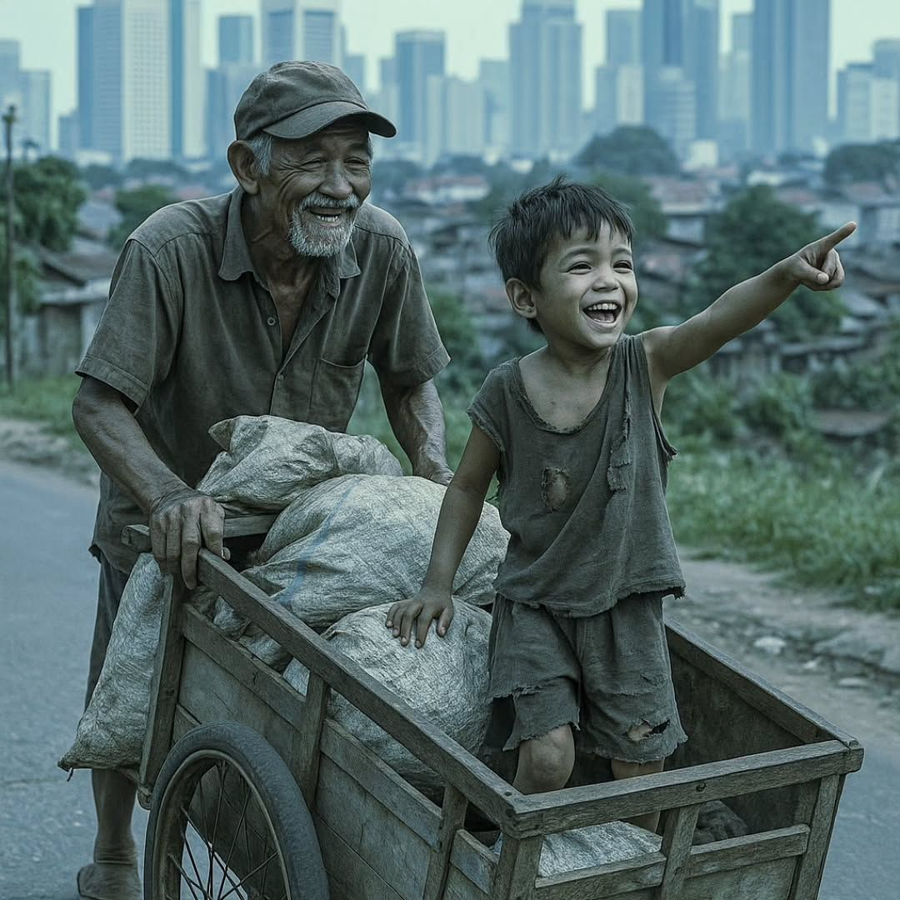

Refleksi Guru

04 Agustus 2026
Kisah Rama, Siswa SMA yang Kehilangan Orang Tuanya Sejak Usia 2 Bulan
Di balik sosok seorang remaja di ruang kelas, sering kali ada cerita perjuangan hidup yang tak pernah kita bayangkan. Sebuah kisah tentang Rama, anak yang harus melangkah dalam kesendirian, berteman keterbatasan, dan belajar dewasa jauh sebelum waktunya.
Baca Selengkapnya →